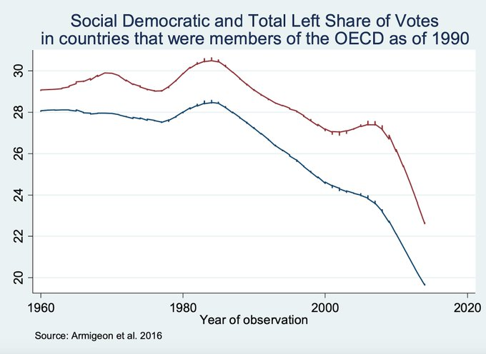

Week 4
Earth being a shithole in The Expanse is a bit of a stretch. They have UBI, an atmosphere, can grow stuff and by then god knows what. So they'd still be 1000 times better off than any comparable nearby planet, rock. Even if underwater u'd sooner develop gills to adapt to that than the bone structure to live on Mars.
Still, good story telling, great show
The first green #hydrogen refueling station is inaugurated in #Madrid🇪🇸 with a supply capacity of 10kg/day and a refueling pressure of 700 bar/MPa. With the support of #Toyota, #Enagas, #Urbaser, Carburos Metalicos and #Sumimoto. It will supply 12 #ToyotaMirai of these companies. pic.twitter.com/1mVzzmoX5V
— Hydrogfan (@hydrogfan) January 29, 2021
"Crashing the gates".. yea.. Back in 90s, u could have that feling about "the Internet" battling retail giants, Walmart. The most representative of the era, Amazon, is now another retail giant, another corporation that people complain about in similar ways.
#GME
"Robinhood giveth, then it taketh away. Hurt one hedge fund, and unless you take the entire system down with it, a Citadel Securities will make sure it grows back. They’re all part of the same organism. 'This makes capitalism very much like the Thing in John Carpenter’s film of the same name: a monstrous, infinitely plastic entity, capable of metabolizing and absorbing anything with which it comes into contact'"
New Catalyst Produces #GreenHydrogen from Seawater--They have also developed a prototype device using this catalyst, known as the ‘Ocean-#H2-Rig’--https://t.co/6PWPJ5INTE #HydrogenNow #decarbonise #cleanenergy #zeroemissions #hydrogen #fuelcells@fuelcellsworks
— FuelCellsWorks (@fuelcellsworks) January 29, 2021
#GME
"This isn't the exciting, hilarious answer you want, but a lot of people had no idea it was even happening until the past 48 hours, and even now, it's mostly just a funny news article about some internet trolls making a bubble... As much as young people on the internet like to imagine this as an epic, David vs Goliath, Wall Street vs Main Street showdown for the history books, from a bird's eye view it's actually just a brief dumpster fire"
Finally some cold. Much prefer than warm weather.
Considering daily minimal vitamin C req, one orange is eough for 5 days? Not bad..
New Found Glory - Tennessee (Punk Goes Crunk) #music
While in US back in the day when I noticed odd BMI, I researched little and came upon Montignac, the French diatician. His method worked brilliantly; he wrote abt same issues that are mainstream now. I helped a few coworkers lose weight through this method too..
What were the highlights from the DW documentary on junk food?
Michelle Obama had a genuine effort started to decrease childhood obesity, but it was hijacked by corps and the message was diverted into exercise (Raj Patel has some colorful comments here), fun and dancing were emphasized and it was swarmed by showbiz people. That switch wld not help, as u need better eating than exercise.
I now have this nagging feeling that the big exercise movements of 80/90s were a result of misplaced hope, or straight up media manipulation. People were gradually getting worse but did not know why, they shld have been led towards better eating, but the message was corrupted, diverted to exercise. More muscles, more running etc.
How it started: During 70s the silent killer was heart attack. It was determined "fat" was the culprit, so the fight was on. Fat had to be removed. But when food producers took the fat out they replaced it with something worse.. sugar. Fat alone cannot cause excessive weight gain, sugar has to act as catalyst.
Producer of "sugared drinks" which essentially what Coca Cola is, had a field day. Through globalization they also reached broader markets. Through NAFTA for example they had freer access to Mexico and coupled with other "invasions" the Mexican diet worsened, became more artificial and sweeter, the effects were immediate, they became less healthier, fatter. Two NGO lawyers recently fought to add a tax on sugared food and drinks, they won; afterwards obesity decreased substantially.
It looks like the raw data came from below
Comparative Political Data Set
Yeah... that shit needs to improve

News item on Oz-CH trade spat on wine is labeled "sour grapes" :) Old-timey news channel stuff..
AT was the PM of left Syriza party during Greece-EU debt crisis negotiations.
A. Tsipras: "Vaccines are a public good, not a corporate product.. Europe should focus on acquiring patents and production licenses, not just vaccines"
Shit is real. Get ready.
From 2023 SYMBIO plan to manufacture 200,000 fuel cell stack per year. in Lyon, France:https://t.co/IfZFpeDsxw
— Reiner (@H2FCEV) January 28, 2021
Congratulations to this decision!
I guess carbon storage can be a pain in the ass...
Ideally though u want some cheap crystallization tech anyone can use which once solidified 1 throws solid CO2 in a pit nearby where they wont mix with, pollute anything.
They provide a carbon storage service? In Norway? Sounds like a good idea. You ship your carbon to them, they store it.
"Northern Lights project: a collaboration between Equinor, Shell and Total that is paving the way for a shared European infrastructure for carbon transport and storage"
From US DOE. Already working, proven tech.
"Approximately 1,600 miles of hydrogen pipelines are currently operating in the United States. Owned by merchant hydrogen producers, these pipelines are located where large hydrogen users, such as petroleum refineries and chemical plants, are concentrated such as the Gulf Coast region. Transporting gaseous hydrogen via existing pipelines is a low-cost option for delivering large volumes of hydrogen"
"Moldova, Europe’s poorest country, has not been able to deliver a single jab yet because it can’t afford to buy the vaccine... Europe’s most economically disadvantaged countries are relying on Covax, a facility for low-income nations led by WHO in response to the pandemic. The organisation will guarantee free jabs for 20% of a country’s population. As for the rest of the doses they need, these countries are seeking help from richer neighbours. That is hardly the way to solve a global pandemic. In an interconnected world, no country is safe until every country is safe" via France24
Making their IP public is always possible. It's been done before, even in US, on transistor patents. 1952.. Truman's time.
AstraZenaca overpromised and now cant deliver. Daam
I am in research, ed material seeking mode which is always intense.
It is rare but there are anti-capitalist rich people, like Hanauer.. keeps saying if nothing is done the pitchforks are coming.
Loud I mean loud, one dude was like "Im at home, shut the doors, windows, still frickin Lars Ulrich banging the drums in my head".
I could profile sure.. but than its TMI
It is interesting Benioff had that anti-capitalist rant on the WEF video. Genuine or a little "i-am-an-outsider", "the-hippie-inside" exercise?
I heard he hired Metallica once for some Salesforce company concert and had them rock so loud ppl had their eardrums pop in central SF. Middle finger to everyone in SF maybe.
I know nothing else abt this man, will not speculate further.
I am always interested in a book that has ".. and Beyond" in its title, no matter the topic.
Too much short interest on that stock, 140% on float is ludicrous. Someone jumped the shark on that one, waiting to get smacked.
"@ihors3
GME short [interest] is $10.64B ... 139.73%"
Arithmetic degrees are different obviously, East is 0, increases counter-clockwise.
And the angles increase clockwise 🤨
Meteorology has its angles all weird... Pointing directly south is 0 degrees.. I guess they are mainly concerned with "will I be feeling that cold breeze up my ass, and at what angle?".
From Davos, World Economic Forum
This was all volumetric energy levels, did not even look at weight issues yet. They will likely be as bad as Li-On.
Solid-State batteries.. Let's check them out.
Current Li-On bats have 1.8 MJ/liter. It is estimated that their dev will stagnate at around 2.88 MJ/liter. Solid state, the hot-shot tech will give you 3.6 MJ / liter. :(
Not even around yet BTW until 2030 and their prod issues have not been resolved.
Air travel not possible w that kind of density.
Liquified H2 has 8.5 MJ/liter, the soln Airbus is considering.
"The best-in-class of these [Li-on] cells have an energy density of around 700 watt-hours per liter (Wh/l)... Yet, their energy density is expected to stagnate at around 800 Wh/l due to the characteristics of their active materials .. 1000 Wh/l should become available in 2030—in the form of solid-state lithium-metal batteries. "
"BBC's Winterwatch delivers first zero emission broadcast"
Wilshire increased - again
2021-01-26 191.42
"LAVO receives commitment from iconic Australian company, Gowings to become a cornerstone investor"
Then do we need all that horizontal space to grow stuff on? Have this "liquid soil", have all vertically stacked up, grow plants.
Alternatives to soil for farming
"[P]lants are grown in a liquid solution of water and nutrients. Hydroponics agriculture is performed within greenhouses that have temperature regulations that allow crops to be grown year-round"
He also answered the question "what is fascism?" with "it is whatever's going through my head at that point in time".
Haha.. of course. Makes perfect sense.
"Benito Mussolini coined the term 'fascism' in 1919 to describe his political movement. He adopted the ancient Roman fasces as his symbol. This was a bundle of rods tied around an ax, which represented the power of Rome"
US may not have köfte, but it does have meatloaf. Pretty much the same ingredients.. very tasty too.. With that whole glaze.. yiiieeaaeah...
Used to think 90s was our zenith but maybe it was 19th century. In the right geo, there is good science, exploration, no climate change, good diet..
Victorian Diet
"Eating onions, cabbage, beetroot and cherries meant 19th century people were healthier than we are today. [They] were healthier and had stronger immune systems than us... Also ate wholemeal bread which contained immune-boosting yeast. Avoided sugar, cigarettes, drank weak alcohol and did strenuous exercise. They ate onions, watercress, cabbage, beetroot, Jerusalem artichokes, apples.
You could get a huge bunch of watercress for next to nothing - there were watercress trains that came into the cities. Cherries were known as a poor man’s fruit. A punnet of cherries, that you would pay £6 for in Marks and Spencer's these days, you could get then for a ha'penny [a coin the equivalent to half a penny]. They ate scraps of meat from the bone, boiling the bones to get all the nutrients. And fish like herring, mackerel and cod roes"
Idea: Take fundamental physics up and until 30s. Take the addl measurements done since (they are fine), and obviously use modern computing.. I think one can still do some damage in sci starting from principles of what was known back then, and working it forward
Their Rome collapsed first, so they had the experience of the absence of a centralized power for longer, had a period of diverse city-states, and there were always other small to medium states near in Europe, which creates a certain pluralistic environment. They had a major part in Renaissance, most of that stuff is internalized. That's why the guinea is better off than my niggers. Otto version of Rome limped into 20th, blocking dev.
"Italy also has Rome in its past, why arent they in a mess at the level of Asia Minor?"
"@defense_news
Greece and France ink $3 billion contract for Rafale fighter jets"
DFINITY is hosting a virtual event with @Forbes that will cover how business models will be reshaped by the new internet. Speaker lineup to be announced soon. Secure your spot for the February 18 event here: https://t.co/uP8TL7Gxmk
— DFINITY Foundation (@dfinity) January 25, 2021
I be doing the Duck Walk like
For all driving, lithium world reserves are soorta enough assuming half a day of storage. If you take one full day, not enough. Half a day, plus a swap mechanism, not enough.. This thing has a bleak future. Thought oil caused wars? Wait to see the wars on this one.
That tactic wld work on a lot of people, not just the "uneducated" BTW. I see a lot of young ppl ignoring this part of politics, having a naive belief in people wisdom or power. Voters fall for spin, lies, get led one way or another, all the time. Know the game so u can fight in it (and eventually prov something better).
How did Biden neutralize Trump strengths..? On China for example.. Ads said Trump was weak on China, sold out to China, it was repeated during debates. To Trump!
Pol experts wld know this is not true.. but the mere fact that it is said, raises doubt, creates oppo to sell.
Here comes the lattice, and probabilities..
DW had an excellent documentary the other day on diet, sugar in foods.
Will that uploaded to their archives? It had Raj Patel, talked abt Coke in Mexico, etc.
Anyone watching that would be warier of American Coca-Cola than the American military.
Cornel West also talked abt the neofascist threat... it's not like this is news in the left.
New deadlier strain of covid? Need to stop all intl flights?
Nationalize all covid vaccine companies
Irving Martin & Brian Dee - Indianapolis 2 #music
M. Mikkelsen movie, Polar, thumbs up. J Wick type story, but it stands on its own. Rated R.
Great scenery, new moral dilemmas, space and Earth - The Expanse did not disappoint #S0508
OoooOOOo Java Applet, is it?
Of course the URL is now pointing to hyperspace.. 404.
That's some old shit right there.
The parts that make up these Frankensteins are also broken beyond repair, e.g. TR nationalism is bizarrely fallacious. The locals of Anatolia owe next to nothing to "the steppes", neither in genetics, nor in culture (every migrant was assimilated into the region, and the gov culture was Roman -so again local-). How my people manage to move an inch is beyond me, but then again, they really aren't.
Which and how the ideological parts get included can be completely arbitrary, the mix is all in the mind of the fascist.
The leaders of these parties, coalitions are effective schizophrenics, mental patients of DID (dissociative identity disorder). This is not surprising bcz the poor asshole has to maintain all that crud in a singular head. So one day he'll talk about his "pure race from the steppes of Central Asia", the next socialism-level state intervention, the one after that neoliberal market action. The followers clap nevertheless, too braindead to realize something is off, but sadly for the country, its media also suffer from the same condition who mistake this show for politics.
TR lives in a seperate plane of existence, as such naturally shows how not to do something, anything.. Its parties, coalitions are cesspools of proto-fascim, bunch of stuff thrown in some container beforehand, from get-go, either after coups, or in "parties" that live in the aftermath of those coups. Take 4 views, throw them in, done. Of course it is impossible to maintain incompatibilities for an extended period of time, that's where fascism comes in.
A by-product of the approach is whatever the mix happens to be, anything that is left out, is immediately deligitimized. This can be the left, sometimes the right (and almost always Kurds), but there is always the legitimate mix and "others".
"How do things work in TR?"
If party gets its chance to govern on his own, great. See FDR and the New Deal.
FDR knew what he wanted. He nearly packed the SC for its hand-wringing.
Yes I said thought leaders, not random jagoff out on the street, see below. She is asking what was done for them, not "have you checked the latest polls?"
"If u can keep it" is part retort
The emergent, self-organized blocks of ideologies, as clusters, carry within a good signal, if enough though leaders coalesced around something, chances are there is an approach that needs representing.
Do coalitions.. But between ideologically distinct parties. If that is in place, fine, obviously some coalitions will be able to deliver more than others, but at least seperate parties decide how that coalition is formed, on their own terms.
"If not unifying, then should people not do coalitions?"
Modernity = Industrial System = Second Wave. It is about standardization, centralization, maximization, etc which forms the superstructure, but underneath that some countries managed to supplant it with a proper representative democracy. Not suprisingly they are better off than others.
Yes but the best way to do it is through democracy.
"Can you do modernity without democracy?"
Larry King was a good interviewer, but lost the touch near the end there..
That quick, unbalancing question will work if 1 knows the landscape. Use it on Seinfeld, u get your ass handed to you. Saw him faceplant like that few more times too.
"Putin.. He puts it in. So he's like Clinton!". 😆 😆 😆
Whose joke was that? It was good
OpenWeatherMap 👍. They nailed that prediction 4 days into the future. Wind, rain, all there.
Dublex Inc. - Simply Smooth #music
An earlier post on BW
"[A] geophysicist, Brad Werner, who in 2012 argued ... that we are in this [climate] mess not because the market system is not working well enough but because it is working too well. Werner’s startling presentation to the annual conference of the American Geophysical Union was titled ‘Is the Earth F--ked?’ and he posed in public the question climate scientists and others who follow their work had been asking in private... [He builds] on the fact that humans now constitute a force of nature so powerful that we have caused the Earth to enter a new geological epoch ... [We created] globally integrated market system of resource-use and waste generation driven by the relentless need to grow...
The essential problem, Werner argued, is that there is a mismatch between the short time-scales of markets, and the political systems tied to them, and the much longer time-scales that the Earth system needs to accommodate human activity, including soaking up our carbon dioxide and other wastes.
Technological progress and globalization of finance, transport and communications have oiled the wheels of the human components of the planetary system allowing it to speed up. But the pace of the natural system carries on as it always has. The problem is not .. market failure but market success"
Plans for a “campus-scale” renewable hydrogen plant that will power a college, golf course and buses in Queensland, Australia were unveiled on 18 January by Energy Estate.
— Hazer Group Ltd (@hazergroupltd) January 24, 2021
Read more here: https://t.co/H7rQ98SPKx#hazergroupltd #hydrogen #golf #buses #renewables #decarbonisation pic.twitter.com/VZIPmiZG2J
Maybe they already know they are getting their "gray" energy from Russia, with CCS done on their side
US has potential for both (but dont frack, or transmit NG over pipes, they leak, very hard to regulate, Id also watch for this shit, the material is used in wind turbines and high-voltage electric installations)
"How is Europe more gung-ho on green energy production compared to other countries?"
Dubya used that stuff so well.. I'll never forget during one debate Gore was constantly saying "I'll fight for this","I'll fight for that" W jumps in and he's like "there's been enough fightin". Boom. With a Southerner, cowboy delivery, good timing.. Gore was floored. Absolute top notch salesmanship.
But the most obnoxious form of unity talk starts from the Washington Consensus, post-politics mentality that emerged, a Frankenstein of the post Berlin Wall, TINA world order. After the whole damn Berlin Wall collapsed on their heads, Dems in abject fear started running around, looked for a new place to go, lurched right, tried to outdo Reps in their own game. Reps balked, and radicalized on 4G (Green, Gays, Guns, God) to differentiate, so the Clinton years had insane amt of drama. These issues were moral, ethical issues not political, unresolvable, so intense fighting persisted, became entrenched. Hannity vs Maddow, people screaming at eachother, theather, junk-food politics are all the descendants of that era.
Now into this environment, in the eleventh inning steps in a certain politican and asks for, you guessed it, unity, comity. It can sell.. "Im a uniter not a divider" etc. But thinking of the causes, for the Dems especially, we know they r in no position to seek unity, their leaving a major ideology unattended for years, and trying to displace another is what caused the shitstorm to begin with, not to mention Trump's rise.
Then what are we left with? A spin, on top of a big mistake, on top of a generational shift -now defunct-... Meh.
Sometimes the use of the word is tactical, you mention unity, if the other guy does not go for it, now he is the asshole. Small effect, but maybe worth a try for some.
Sometimes it is used bcz pol has no inclination to deliver anyway, you ask for unity, you dont get it, than you immediately blame the other side as a cover for you not doing anything.
There cld be some old cultural aspects involved; we talked abt during Pemmican Wars Brits had to step in and merge two companies. If such things happened more than once, maybe it became "the legitimate thing", "the grown up thing" in the eyes of the US political class, persisted in its DNA, at the very least, as a lip-service, verbally.
Here are some reasons unity, or "going bi" is eluded to so much in US politics.
During a pandemic, after Trump, and in a country composed of states, it is not that off-kilter to pay some lip service to the concept. Of course the unity of states doesnt imply political unity, but hey, it rhymes, good TV. It's a feel-good word, like marshmallows, chicken soup, Sunday morning.. School is out. Whatever...
Not bad... If there is less corp pandering, more left from AC, the bro at CNN can be the new Fredo.
"Governor Andrew M. Cuomo today announced that leading alternative energy technology provider Plug Power Inc. will establish a $125 million Innovation Center in New York State creating 377 new jobs. The center, located in the Town of Henrietta, Monroe County, will be the first world's first Gigafactory for Proton Exchange Membrane technology. The company will use this facility to manufacture hydrogen fuel cell stacks and electrolyzers"
Nice.. Good to see confirmation from Airbus, on weight, volume etc, and they are actively thinking about it #H2. Where is Boeing?
So light didnt bend near a star (only at the limb)? But I saw an entire movie on Eddington saying he proved a theory right with one observation! David Tennant was in it! Frickin Doctor Who!
"@LaborforSPayer
We've got a huge opportunity with the new administration to win
MedicareForAll! This week, we're bringing labor and healthcare
activists together to map out how we'll win this fight - the #M4A2021 conference"
@anthonyLfisher
I spoke with Rep. Rashida Tlaib about why she's leading the opposition against calls for a massive expansion of the security state in reaction to the Capitol attack. She said eroding civil liberties is not the answer to holding the rioters accountable.